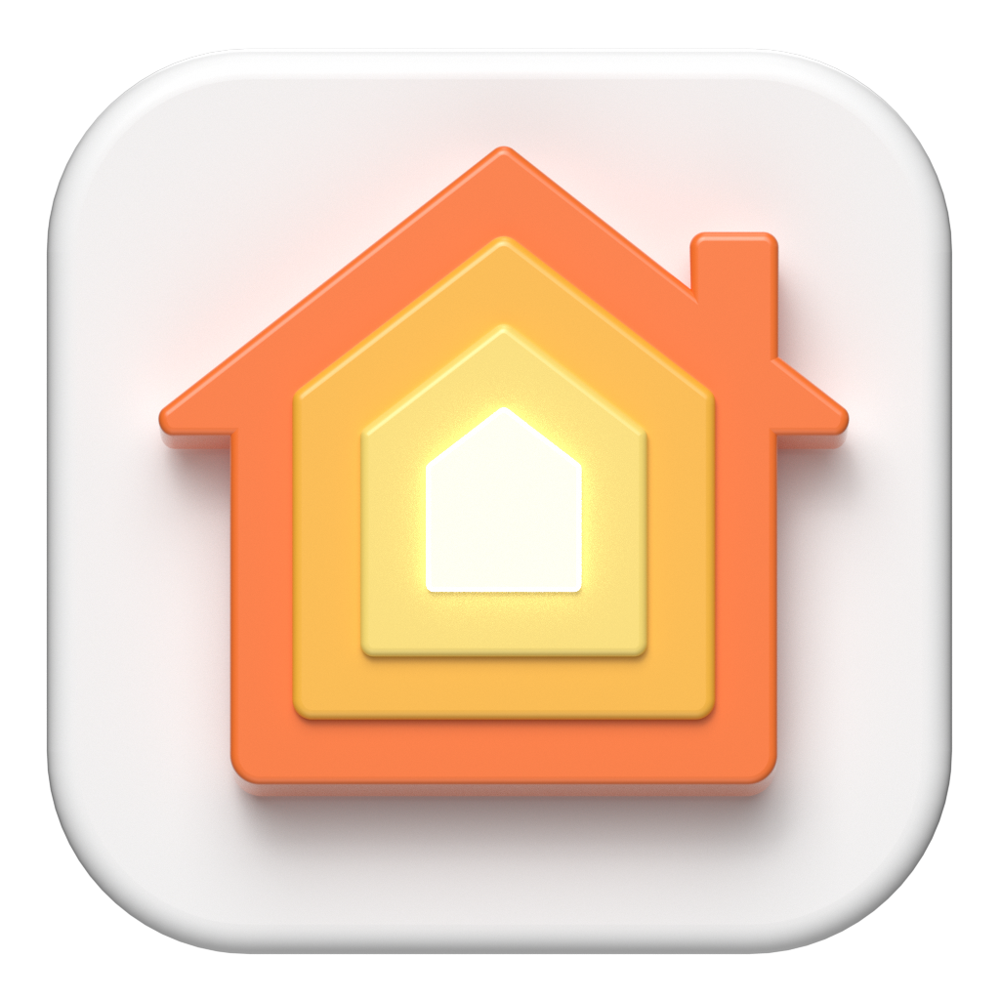

<nav class="navbar navbar-expand-lg navbar-dark bg-nav">
    <div class="container">
        <a class="navbar-brand d-flex align-items-center" href="#">
            
           <h3 class="ms-3">Node House</h3>
        </a>
        <button class="navbar-toggler" type="button" data-bs-toggle="collapse" data-bs-target="#navbarNavAltMarkup"
            aria-controls="navbarNavAltMarkup" aria-expanded="false" aria-label="Toggle navigation">
            <span class="navbar-toggler-icon"></span>
        </button>
        <div class="collapse navbar-collapse justify-content-center" id="navbarNavAltMarkup">
            <div class="navbar-nav">
                <a class="nav-link active mx-4" aria-current="page" routerLink="">Home</a>
                <a class="nav-link mx-4" routerLink="destacados">Más Buscados</a>
                <a class="nav-link mx-4" routerLink="footer">Nosotros</a>
            </div>
        </div>
        <div>
            <button type="button" class="btn btn-primary" routerLink="login">Iniciar Sesión</button>
        </div>
    </div>
</nav>